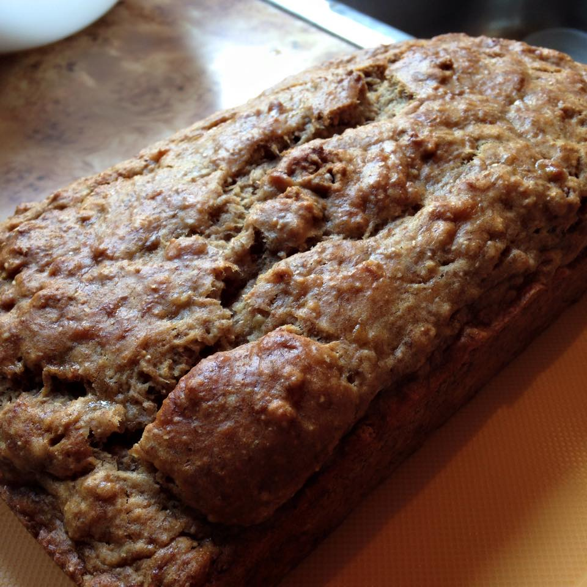

Banana Bread Recipe

Finished Banana Bread.
Description
Delicious and simple banana bread recipe that a wonderful redditor posted. It's vegan and it made it to the front page.
Ingredients
- 3 Large Bananas
- 1/3 to 1/4 Cups brown sugar
- 1/4 Cup canola oil
- 1/4 Cup almond milk
- 1 tsp Vanilla extract
- 1 tsp Cinnamon
- 1/2 tsp nutmeg
- 1 1/2 cups flour
- 1 1/2 tsp baking powder
- 1/2 tsp baking soda
- a pinch of salt
Directions
- Heat oven to 350degrees fahrenheit
In a bowl...
- Chop up three really large-ish over ripe bananas and throw them in a mixing bowl.
- Add sugar and mash
- Add Canola Oil, milk, vanilla, cinnamon and nutmeg and mix
- Sieve flour, baking powder, baking soda and salt over wet mixture
- Fold in the dry ingredientsDO NOT MIX
- Pour the batter into a greased loaf pan
- Baked for 30-40 mins. When its done an inserted toothpick should come out clean.
ENJOY!